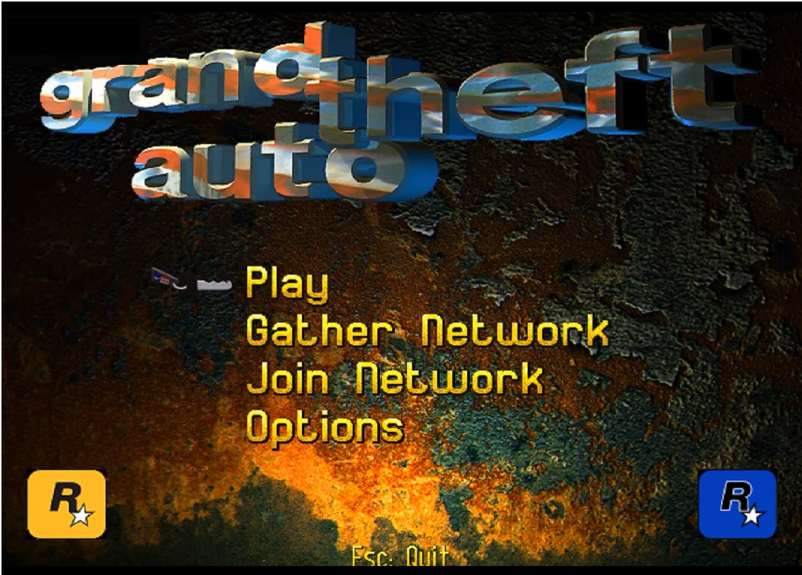

80s and 90s Games
Super Mario Bros

NES - 1985
Super Mario Bros. è un videogioco a piattaforme sviluppato e pubblicato nel 1985 da Nintendo per il NES. Ideato da Shigeru Miyamoto come seguito di Mario Bros., è il primo capitolo della serie di videogiochi Super Mario. Pur non essendo la prima apparizione del personaggio di Mario, con l'uscita del gioco la sua celebrità è aumentata notevolmente, e da qui è nato un importante franchise multimediale.
Crash Bandicoot
PS1 - 1996
Crash Bandicoot è un videogioco a piattaforme per PlayStation sviluppato da Naughty Dog su PS1. Il videogioco costituisce il primo capitolo dell'omonima serie e narra gli eventi che hanno portato alla creazione del protagonista, Crash Bandicoot, da parte dei suoi due principali antagonisti, il Dr. Neo Cortex e lo scienziato Nitrus Brio, che intendono servirsi di lui per conquistare il mondo. Riuscito a fuggire, Crash affronta i suoi nemici per sventare i loro piani e porta in salvo la sua fidanzata, Tawna, che era stata imprigionata da Cortex.
Gran Turismo

PS1 - 1997
Primo simulatore di guida sviluppato da Polyphony Digital e pubblicato su PS1 nel 1997. È il primo titolo della serie Gran Turismo, nonché il gioco più venduto in assoluto per quella console, con quasi 11 milioni di copie.
I motivi del successo di questa fortunata serie sono molteplici, ma principalmente il fatto che le oltre 290 vetture a disposizione del giocatore abbiano ognuna delle caratteristiche di guida proprie, rende il gioco estremamente vario anche dopo lungo tempo.
Grand Theft Auto

MS-DOS/PC/PS1 - 1997
Grand Theft Auto è un videogioco d'azione sviluppato da DMA Design (ora Rockstar North) e pubblicato nel 1997. Uscì per MS-DOS, Windows e PlayStation nel 1997.
È il primo capitolo della popolare serie di videogiochi Grand Theft Auto, dove ci si impersona in criminale che, libero di girovagare per la città, deve completare missioni quali rapine, omicidi, ed altri crimini, che gli sono assegnati da vari "boss" per telefono. In realtà, il giocatore è libero di agire come preferisce, esplorando la città, scorrazzando per il traffico, rubando e rivendendo macchine per guadagnare soldi.